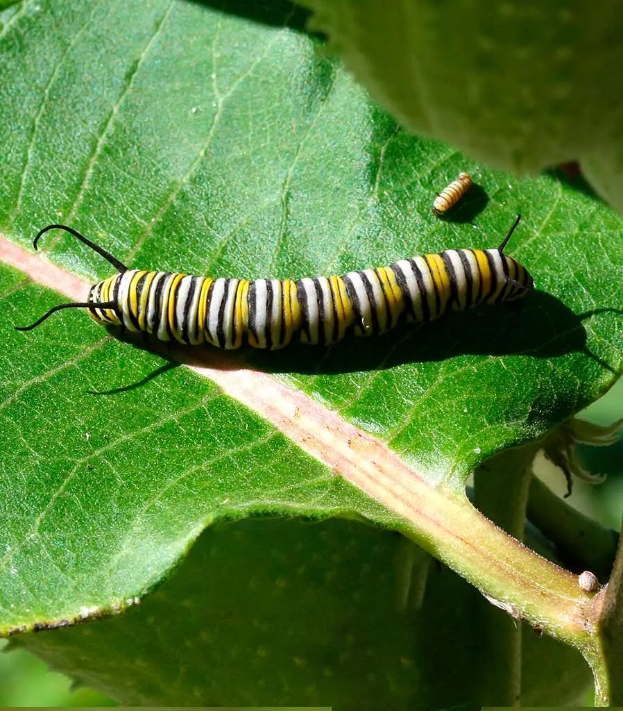
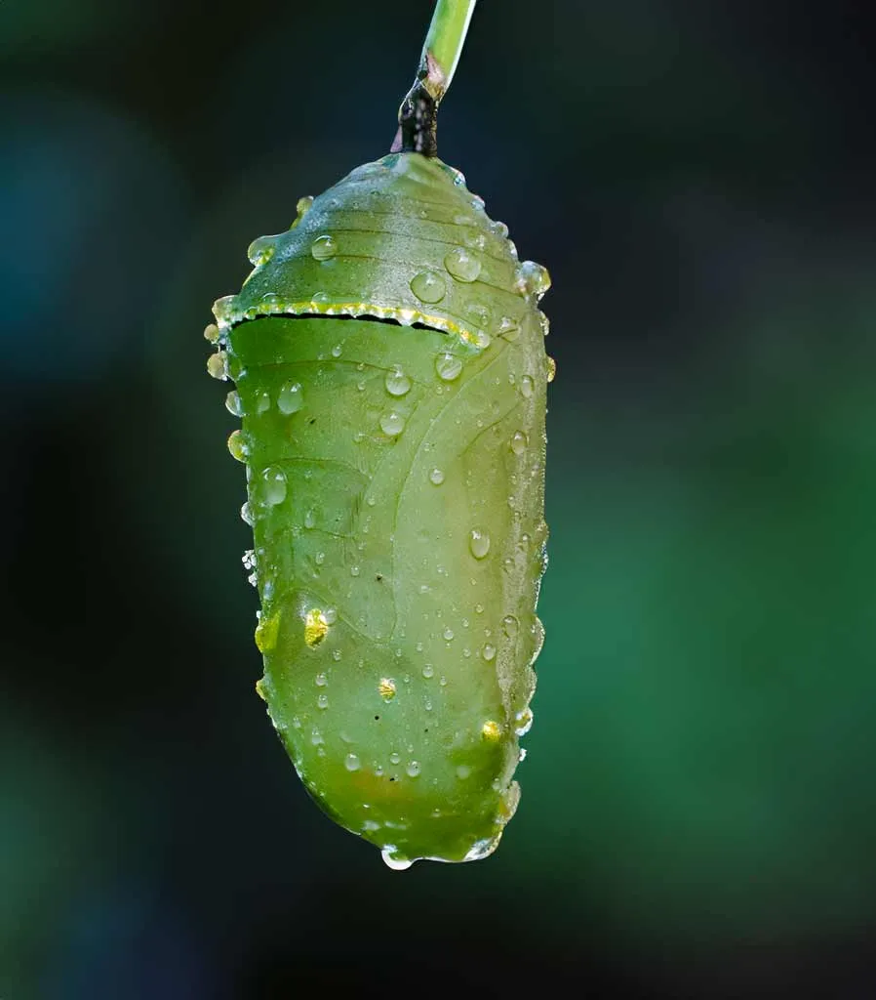

A Borboleta Monarca (Danaus Plexippus) se destaca não apenas pela sua beleza inconfundível, mas também pela sua notável capacidade de migração. Além disso, o Borboletário de São Paulo proporciona uma chance única para que os visitantes possam imergir no ciclo de vida desta espécie cativante, oferecendo uma experiência tanto educativa quanto fascinante.
Conhecida por suas asas vibrantes de cores laranja e preto, a Monarca possui uma envergadura que atinge até 10 centímetros. Habitando desde regiões temperadas até as tropicais nas Américas, essas borboletas empreendem migrações para evitar o frio. Consequentemente, nosso Borboletário, situado numa área de proteção ambiental, simula de maneira precisa o habitat dessas borboletas, promovendo um contato mais próximo e intenso com a natureza para nossos visitantes.
Duração do ovo: 4 dias Inicialmente, a jornada começa com a postura dos ovos pela fêmea na Asclepia, que eclodem após cerca de 4 dias. A seleção dessa planta é crucial, pois suas folhas contêm substâncias que oferecem um sabor desagradável a predadores, protegendo assim as larvas e as borboletas adultas.
Fase da Lagarta - Duração da lagarta: 7 a 14 dias Posteriormente, a eclosão revela uma lagarta voraz, que se alimenta da Asclepia, crescendo rapidamente. Este período é marcado por múltiplas mudanças de pele à medida que se desenvolve. De fato, a coloração vibrante da Monarca, desde a fase jovem, funciona como um alerta eficaz contra predadores.
Fase da Pupa - Duração da pupa: 10 a 14 dias Em seguida, a lagarta evolui para a fase de pupa, onde se dá a transformação em borboleta. Envolvida num casulo de cor verde jade, o processo de metamorfose se desenrola ao longo de aproximadamente duas semanas. Este é, sem dúvida, um dos momentos mais fascinantes do ciclo, onde a reorganização completa ocorre dentro da crisálida.

Fase da Borboleta - Duração do imago: cerca de 30 dias Por fim, emerge a borboleta adulta, pronta para se alimentar, acasalar e, em alguns casos, começar sua migração. Curiosamente, dependendo do momento do seu nascimento, a Monarca adulta pode viver desde algumas semanas até cerca de oito meses.